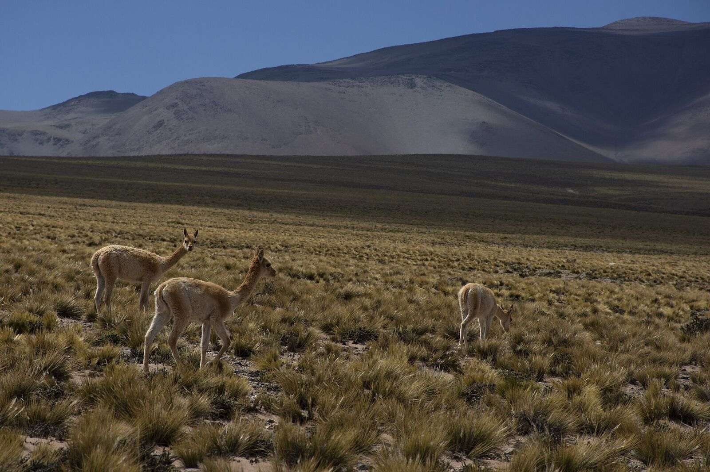

The Chaku Returns: Ancestral Vicuña Shearing Sustains Weavers in Catamarca's High Puna
In the Laguna Blanca Biosphere Reserve, communities round up, shear and release wild vicuñas as their ancestors did — and turn the world's finest natural fibre into ponchos that take a year on the loom.

It begins with a human chain. At first light on the appointed day, villagers, volunteers and visiting tourists spread out across the puna grassland and walk slowly forward, arms linked by rope and coloured flags, funnelling herds of wild vicuñas toward a corral. The animals are shorn of their extraordinary fleece — and released back onto the plateau, unharmed, until their fibre grows again.
This is the chaku, the communal roundup and shearing that Andean peoples practised for centuries before European contact. In Laguna Blanca, a village at more than 3,000 metres in the Belén department of Catamarca, it never quite died — and since 2003 it has been the legal, sustainable heart of one of the puna's oldest economies.
Laguna Blanca sits inside a Biosphere Reserve created to protect the vicuña, a wild camelid that poaching had driven close to extinction. State protection policies from the late 1990s allowed the herds to recover, and with them came something just as important: a legal supply of fibre for the weaving families of Belén and Antofagasta de la Sierra, who for decades had watched their raw material vanish.
The finest fibre in the world
Vicuña fleece is the finest natural fibre worked anywhere, and everything about it resists hurry. The fibre must be cleaned strand by strand of coarse hairs — the descerdado — then hand-spun down to the thickness of sewing thread. A full poncho can demand up to a year of work. Jovita, a weaver from Antofagasta de la Sierra who learned to spin at ten years old, spent four months on a vest that weighs 150 grams.
Laguna Blanca's signature is the 'ojo de perdiz' — the partridge eye — an intricate openwork pattern that orders the weave of its ponchos, shawls and scarves. Amado, one of the village's master weavers, began working vicuña at 22, as soon as the recovered chaku made the fibre obtainable; in other families the craft passes down generations, sons learning beside mothers at the loom.
The showcase is the Fiesta Nacional del Poncho, the national craft festival that fills the fairgrounds of San Fernando del Valle de Catamarca every July — its 54th edition was held in 2025 — where Laguna Blanca's vicuña textiles are exhibited among the finest work in the country.
Tourism and cosmovision
The chaku itself has become a destination. For the November 2024 roundup, organised by the municipality of Villa Vil with the provincial tourism ministry and the local weavers' cooperative, every bed in Laguna Blanca was booked; organisers marked out concentric zones so that visitors and press could watch the shearing without stressing the animals.
For the communities, the practice is not only economics. In Andean cosmovision the vicuña — wild, unowned, impossible to farm — belongs to Pachamama, the earth mother, and taking its fleece is a loan that must be honoured: hence the ceremony that opens each chaku, and the rule, older than any regulation, that the animal walks away alive.
Catamarca is the province of Fénix and Sal de Vida, where lithium carbonate leaves for the ports in ever larger volumes. A few hours' drive from the salars, its high puna is also home to an economy measured in 150-gram garments and year-long weaves. The province's future is being written in both — and in Laguna Blanca, at least, the oldest business model in the Andes is once again a living one.